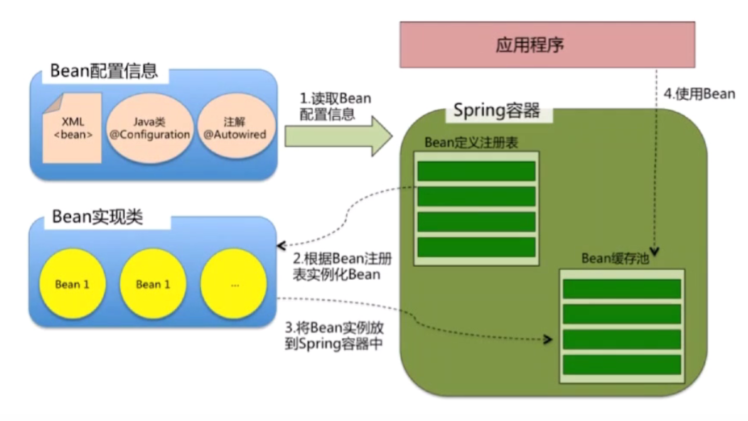
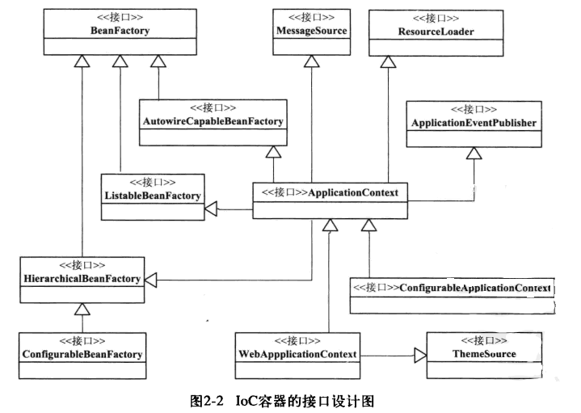
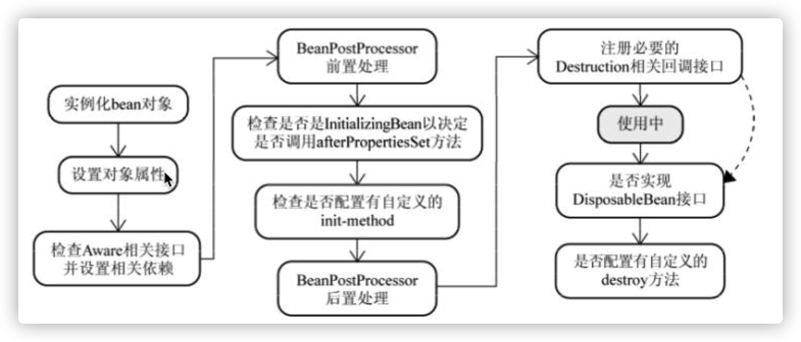
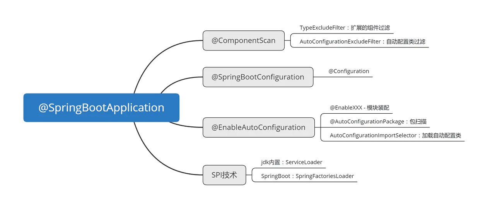

Spring重要模块

- Spring Test : 提供了对 JUnit 和 TestNG 测试的支持。
- Spring Beans：包含访问配置文件，创建和管理Bean（BeanFactory），依赖注入相关的类。
- Spring Core： 定义并提供资源定位方式，基本核心工具类，其他组件都会使用该模块。
- Spring Context：IoC容器实现，构建于Beans和Core模块之上。
- Spring AOP ：提供了面向切面的方法级别的编程实现，最小化的动态代理实现。运行时织入。
- Spring Aspects ： 该模块为与AspectJ的集成提供支持。编译期织入。
Inversion of Control
IoC图解

Spring核心类和接口
BeanDefinition接口
Spring通过定义BeanDefinition接口来管理bean对象以及它们之间的依赖关系。
根据配置，Spring运行时生成用来描述Bean对象的BeanDefinition实现类对象，在BeanDefinition的抽象实现类AbstractBeanDefinition中定义了许多属性，常用属性配置有：
- 作用范围：XML配置方式scope，注解方式@Scope。
- 是否懒加载：XML配置方式lazy-init，注解方式@Lazy。
- 是否优先实现：XML配置方式primary，注解方式@Primary。设置为true的bean会是优先的实现类。
- 工厂Bean：XML配置方式factory-bean和factory-method，注解方式则需要工厂类实现FactoryBean接口并结合@Bean注解。
Spring2.5后源码中常用的实现类为GenericBeanDefinition，取代之前的RootBeanDefinition和ChildBeanDefinition。
容器
Spring的IoC容器接口设计图如下：

由图可知，Spring主要有以下两个容器系列：
- 实现
BeanFactory接口的简单容器系列，它们只实现了容器的最基本功能。如下：BeanFactory=>HierarchicalBeanFactory=>ConfigurableBeanFactory ApplicationContext应用上下文，它作为容器的高级形态而存在，它通过继承以下接口实现了附加功能：MessageSource：信息源。可以支持国际化的实现，为开发多语言版本的应用提供服务。ResourceLoader（新版本Spring为ResourcePatternResolver）：资源定位加载器，用于加载配置文件。若不继承该接口，用户需要像使用BeanFactory那样手动加载。ApplicationEventPublisher：应用事件。
BeanFacory与FactoryBean
FactoryBean接口的实现类对象是一个由IoC容器管理的Bean对象，只不过它是一个可以生成对象的工厂Bean。而BeanFactory是Spring中最基本的IoC容器，在该接口中定义了一个静态常量：转义符&，可以使用getBean(“&XXXFactoryBean”)获取XXXFactoryBean本身，而若是调用getBean(“XXXFactoryBean”)其返回的是工厂Bean生产的对象。
DefaultListableBeanFactory
该类是一个简单IoC容器实现类，其他的容器都是通过持有一个该容器的实例并在此基础上扩展功能实现，如XmlBeanFactory，以及ApplicationContext的诸多实现类。
DefaultListableBeanFactory扩展了AbstractAutowireCapableBeanFactory，并实现了ConfigurableListableBeanFactory和BeanDefinitionRegistry接口，它维护了一个ConcurrentHashMap实例beanDefinitionMap，这就是容器的存储结构，另外BeanDefinitionRegistry接口的实现就是用于向容器中注册BeanDefinition的。
AbstractApplicationContext
这是一个重要的抽象类，它实现了ConfigurableApplicationContext，实现了一些方法，并定义了许多应用上下文的模板方法，如publishEvent、registerListeners和refresh方法等。同时该类继承了DefaultResourceLoader类，实现了资源路径的获取。
Resource/ResourceLoader
Resource接口是Spring用来封装I/O操作的类，它是一个资源描述器，在容器创建时给出Bean定义信息的路径，如文件，类路径等。而ResourceLoader实现不同的Resource加载策略，接口中定义了一个getResource方法，按需返回特定类型的Resource。
BeanDefinitionReader
该接口中定义了一系列用于读取BeanDefinition的重载方法loadBeanDefinitions，Spring就是在该方法中使用ResourceLoader读取bean的定义信息。该接口还定义了一个重要方法getRegistry，其返回一个BeanDefinitionRegistry，该接口中定义了方法registerBeanDefinition，用于注册BeanDefinition到IoC容器中。由此可总结，BeanDefinition的注册可分为如下三个过程：
Resource定位：Bean配置信息的资源定位。BeanDefinition的载入和解析：把用户定义好的Bean信息抽象为BeanDefinition。BeanDefinition注册到IoC容器。
PostProcessor
后置处理器本身也是一种需要注册到容器里的Bean对象：
- 其里面的方法会在特定的时机被容器调用；
- 其作用是在不改变容器或Bean核心逻辑的情况下对Bean进行增强。
Spring中有如下的后置处理器：
- 容器级别：
BeanDefinitionRegistryPostProcessor和BeanFactoryPostProcessor。 - 普通的Bean后置处理器：
BeanPostProcessor。该接口的两个方法分别在每个普通Bean初始化前后被调用。
Aware子接口
所有的 Bean 对 Spring 容器的存在是没有感知的，但是在实际项目中，我们不可避免的要用到 Spring 容器本身提供的资源，这时候要让 Bean 主动意识到 Spring 容器的存在，才能调用 Spring 所提供的资源，这就是Aware的作用。不过Aware只在框架内部使用，若在Bean中使用，那么就紧耦合了。常见的Aware如下：
| Aware子接口 | 描述 |
|---|---|
| BeanNameAware | 获取容器中 Bean 的名称 |
| BeanFactoryAware | 获取当前 BeanFactory ，这样可以调用容器的服务 |
| ApplicationContextAware | 同上。 |
| MessageSourceAware | 获取 Message Source 相关文本信息。 |
| ApplicationEventPublisherAware | 使Bean可以发布事件。 |
| ResourceLoaderAware | 获取资源加载器，这样获取外部资源文件。 |
事件监听器
监听器将监听感兴趣的事件，一旦事件发生便做出响应。Spring的事件驱动模型三大组成部分如下：
- 事件：
ApplicationEvent抽象类。 - 事件监听器：
ApplicationListener接口。 - 事件发布器：
ApplicationEventPublisher和ApplicationEventMulticaster接口。发布与广播。
容器的初始化
refresh方法
1 | public void refresh() throws BeansException, IllegalStateException { |
容器初始化总结
- 刷新容器，并注册系统级的Bean，如系统环境Bean。
- 注册并调用系统级的后置处理器，注册普通Bean的后置处理器。
- 初始化国际化配置、事件发布器、注册事件监听器。
- 初始化特殊的bean和所有非懒加载的单例bean。
- 清除资源缓存，初始化生命周期处理器，发布最终事件。
Bean的创建（生命周期）
如图所示：

单例Bean的生命周期如上图所示。而多例Bean是不会由容器管理的，多例Bean只能由GC回收，因此其定义的销毁方法不会被容器调用。
如何解决循环依赖？
方法调用栈：refresh -> finishBeanFactoryInitialization -> preInstantiateSingletons -> getBean -> doGetBean。
AbstractBeanFactory：doGetBean方法中a. 第一处getSingleton：尝试从三级缓存中获取Bean对象。->
DefaultSingletonRegistry：getSingleton方法源代码如下：1
2
3
4
5
6
7
8
9
10
11
12
13
14
15
16
17
18
19
20
21
22
23
24
25
26
27
28
29
30
31
32
33
34protected Object getSingleton(String beanName, boolean allowEarlyReference) {
// 尝试从一级缓存singletonObjects从获取Bean
Object singletonObject = this.singletonObjects.get(beanName);
// 如果一级缓存中没有并且Bean正在创建中
if (singletonObject == null && isSingletonCurrentlyInCreation(beanName)) {
//尝试从二级缓存earlySingletonObjects获取还未进行属性赋值的Bean
singletonObject = this.earlySingletonObjects.get(beanName);
//如果二级缓存中也没有，且Bean允许被循环引用
if (singletonObject == null && allowEarlyReference) {
synchronized (this.singletonObjects) {
//加锁同步后再次重新尝试从一级和二级缓存中获取Bean（double-check）
singletonObject = this.singletonObjects.get(beanName);
if (singletonObject == null) {
singletonObject = this.earlySingletonObjects.get(beanName);
if (singletonObject == null) {
//若依然都没有，则尝试从三级缓存singletonFactories中获取Bean
ObjectFactory<?> singletonFactory = this.singletonFactories.get(beanName);
if (singletonFactory != null) {
singletonObject = singletonFactory.getObject();
//若从三级缓存中获取到Bean，则将Bean放入二级缓存，并从三级缓存中移除
this.earlySingletonObjects.put(beanName, singletonObject);
this.singletonFactories.remove(beanName);
}
}
}
}
}
}
return singletonObject;
}三级缓存都是
HashMap。其中singletonObjects里存放的是实例化并且已完成属性赋值之后的单例对象，earlySingletonObjects中存放的是已完成实例化未属性赋值的早期单例对象，而singletonFactories中存放的是ObjectFactory对象，此对象的getObject方法返回值即是刚完成实例化还未属性赋值的单例对象。因此，单例对象先存在于singletonFactories中，后存在于earlySingletonObjects中，最后属性赋值完成后放入singletonObjects中。b. createBean：根据不同的作用域创建Bean实例。->
AbstractAutowireCapableBeanFactory：createBean，创建bean实例的准备：
1
2
3
4
5
6
7
8
9protected Object createBean(String beanName, RootBeanDefinition mbd, @Nullable Object[] args)
throws BeanCreationException {
// 省略无关代码
try {
Object beanInstance = doCreateBean(beanName, mbdToUse, args);
return beanInstance;
}
// 省略无关代码
}doCreateBean，创建bean实例：
1
2
3
4
5
6
7
8
9
10
11
12
13
14
15
16
17
18
19
20
21
22
23
24
25protected Object doCreateBean(final String beanName, final RootBeanDefinition mbd, final @Nullable Object[] args)
throws BeanCreationException {
BeanWrapper instanceWrapper = null;
// 省略代码
if (instanceWrapper == null) {
// 重点！实例化bean
instanceWrapper = createBeanInstance(beanName, mbd, args);
}
Object bean = instanceWrapper.getWrappedInstance();
//省略代码
boolean earlySingletonExposure = (mbd.isSingleton() && this.allowCircularReferences && isSingletonCurrentlyInCreation(beanName));
if (earlySingletonExposure) {
//省略代码
// 重点！将实例化的对象添加到三级缓存singletonFactories中
addSingletonFactory(beanName, () -> getEarlyBeanReference(beanName, mbd, bean));
}
// 初始化bean
Object exposedObject = bean;
try {
populateBean(beanName, mbd, instanceWrapper);//重点!注入属性值（依赖注入）
exposedObject = initializeBean(beanName, exposedObject, mbd);
}
// 省略无关代码
return exposedObject;
}populateBean：给bean实例注入属性值（依赖注入）
Java中的循环依赖分两种，一种是构造器的循环依赖，另一种是属性的循环依赖。构造器循环依赖是指：两个类在它们的构造器参数中互相依赖（多个类则是成环）。构造器循环依赖是无法解决的，属于严重的代码设计问题。Spring只能解决属性的循环依赖，假设类A与类B存在属性循环依赖，Spring先创建A的对象。在Bean的创建过程中，当执行到doGetBean方法时：
- 在第一处getSingleton方法中，一二三级缓存map均为空，获取不到A的实例；
- 执行到createBean->doCreatBean方法中，通过createBeanInstance方法创建对象A；
- addSingletonFactory方法将还未进行属性赋值的对象A放入三级缓存singletonFactories中，完成对象A的早期暴露。
- 接着执行populateBean方法对A进行属性注入。此时发现需要对A注入B的实例，触发getBean方法对B进行初始化。
- B的初始化流程首先重复步骤1、2、3，接着执行populateBean对B进行属性注入，发现它有一个属性A，触发getBean方法对A进行初始化。
- 再次来到步骤1，此时三级缓存singletonFactories已经存在A的实例了，将A放入二级缓存并从三级缓存中删除，属性注入，完成对B的初始化。
- 回溯到对A的初始化流程（步骤4结尾），对A中注入B的实例。
参考文章：https://www.cnblogs.com/zzq6032010/p/11406405.html
Spring有线程安全问题？
多例：每次使用都是新的对象，无线程安全问题。
单例：对象中有实例变量，是线程不安全的，可以使用ThreaLocal解决。
@Autowired原理
- @Autowired注解的实现是通过后置处理器
AutowiredAnnotationBeanPostProcessor类的postProcessPropertyValues方法实现的。 - 自动装配时，从容器中如果发现有多个同类型的属性时，@Autowired注解会先根据类型判断，然后根据@Primary、@Priority注解判断，最后根据名称来判断，如果还是不能决定注入哪一个bean时，就会抛出
NoUniqueBeanDefinitionException异常。
Aspect Oriented Programming
AOP的三种织入方式
- 编译期织入：需要特殊的Java编译器，如AspectJ。
- 类加载时织入：需要特殊的Java编译器，如AspectJ和AspectWerkz。
- 运行时织入：Spring采用的方式，通过动态代理实现。
Spring AOP原理
待补充。
Spring事务
默认采用数据库的隔离级别，InnoDB为可重复读。
事务的传播机制
所谓事务传播机制，是指若一个方法存在事务，且在该方法内部调用了其他方法，那么其他方法是否存在事务呢？Spring中的事务传播如下表：
| 事务传播行为类型 | 说明 |
|---|---|
| PROPAGATION_REQUIRED | 如果当前没有事务，就新建一个事务，如果已经存在一个事务中，加入到这个事务中。（默认） |
| PROPAGATION_SUPPORTS | 支持当前事务，如果当前没有事务，就以非事务方式执行。 |
| PROPAGATION_MANDATORY | 使用当前的事务，如果当前没有事务，就抛出异常。 |
| PROPAGATION_REQUIRES_NEW | 新建事务，如果当前存在事务，把当前事务挂起。 |
| PROPAGATION_NOT_SUPPORTED | 以非事务方式执行操作，如果当前存在事务，就把当前事务挂起。 |
| PROPAGATION_NEVER | 以非事务方式执行，如果当前存在事务，则抛出异常。 |
| PROPAGATION_NESTED | 如果当前存在事务，则在嵌套事务内执行。如果当前没有事务，则执行与PROPAGATION_REQUIRED类似的操作。 |
@Transactional
- @Transactional注解只能应用到public修饰符上，其它修饰符不起作用，但不报错。
- 默认情况下此注解会对unchecked异常进行回滚，对checked异常不回滚。如果是checked异常也想回滚的话，注解上需写明rollbackFor属性，即@Transactional(rollbackFor=Exception.class)。
1 | [checked异常]：表示无效，不是程序中可以预测的。比如无效的用户输入，文件不存在，网络或者数据库链接错误。这些都是外在的原因，都不是程序内部可以控制的。 |
事务不回滚解决方案
- 检查方法是不是public。
- 检查异常是不是unchecked异常。
- 如果是checked异常，注解@Transactional(rollbackFor=Exception.class)。
Spring MVC执行流程
如图所示：

SpringMVC执行流程:
- 用户发送请求至前端控制器DispatcherServlet。
- DispatcherServlet收到请求调用处理器映射器HandlerMapping。
- HandlerMapping根据请求url找到具体的处理器，生成处理器执行链HandlerExecutionChain(包括处理器对象和处理器拦截器)返回给DispatcherServlet。
- DispatcherServlet请求处理器适配器HandlerAdapter进行适配，并执行参数封装，数据格式转换，数据验证等操作。
- 执行处理器Handler(Controller，也叫页面控制器)。
- Handler执行完成返回ModelAndView。
- HandlerAdapter将Handler执行结果ModelAndView返回到DispatcherServlet。
- DispatcherServlet将ModelAndView传给ViewReslover视图解析器。
- ViewReslover解析后返回具体View。
- DispatcherServlet对View进行渲染视图（即将模型数据model填充至视图中）后响应用户。
Spring Boot自动装配
注：该部分完全总结自掘金小册”SpringBoot源码解读与原理分析”。
主启动类上的@SpringBootApplication注解的作用如下图：

@ComponentScan
源代码如下：
1 | (excludeFilters = { (type = FilterType.CUSTOM, classes = TypeExcludeFilter.class), |
Spring Boot默认扫描主启动类所在包及子包里所有组件，并指定排除逻辑：
TypeExcludeFilter：用户可自定义Filter继承该类，包扫描时Spring就会调用match方法执行我们自定义的过滤逻辑。AutoConfigurationExcludeFilter：排除自动配置类。
@SpringBootConfiguration
与@Configuration的作用相同，被其标注的类会被 Spring 的IOC容器认定为配置类。
@EnableAutoConfiguration
Spring的手动装配Bean的方式有：
- 使用模式注解
@Component等（Spring2.5+） - 使用配置类
@Configuration与@Bean（Spring3.0+） - 使用模块装配
@EnableXXX与@Import（Spring3.1+）
模式注解只能在自己编写的代码中标注，无法装配jar包中的组件。为此可以使用 @Configuration 与 @Bean，手动装配组件。但这种方式一旦注册过多，会导致编码成本高，维护不灵活等问题。而模块装配适合批量装配组件。
模块装配的使用方式为：给配置类标注自定义注解@EnableXXX。自定义注解@EnableXXX的代码如下：
1 |
|
@Import注解的使用方式如下：创建几个颜色的实体类，如Red，Yellow，Blue，Green，Black等。
配置类：
1 |
|
ImportSelector的实现类：
1 | //返回要注册的类的全类名数组 |
ImportBeanDefinitionRegistrar的实现类：
1 | public class ColorImportBeanDefinitionRegistrar implements ImportBeanDefinitionRegistrar { |
自定义装配类：
1 | ({Red.class, ColorRegistrarConfiguration.class, ColorImportSelector.class, ColorImportBeanDefinitionRegistrar.class}) |
全局配置类：
1 |
|
Spring Boot的自动装配就是模块装配：
1 |
|
@AutoConfigurationPackage
该注解的源码如下：
1 | (AutoConfigurationPackages.Registrar.class) |
而AutoConfigurationPackages.Registrar的源码如下：
1 | static class Registrar implements ImportBeanDefinitionRegistrar, DeterminableImports { |
由此可知@AutoConfigurationPackage的作用本质上是通过@Import注解注册主启动类所在包下的类。
AutoConfigurationImportSelector
1 | public class AutoConfigurationImportSelector implements DeferredImportSelector, BeanClassLoaderAware, |
DeferredImportSelector 处理自动配置，其执行时机是在 @Configuration 注解中的其他逻辑被处理完毕之后（包括对 @ImportResource、@Bean 这些注解的处理）再执行。
现在来看核心方法selectImports：
1 |
|
该方法的核心就是getAutoConfigurationEntry，它获取了需要自动装配的所有类的全类名：
1 | protected AutoConfigurationEntry getAutoConfigurationEntry(AnnotationMetadata annotationMetadata) { |
该方法的核心则是通过getCandidateConfigurations获取候选的自动配置类的全类名：
1 | protected List<String> getCandidateConfigurations(AnnotationMetadata metadata, AnnotationAttributes attributes) { |
SpringFactoriesLoader.loadFactoryNames()加载了指定常量路径META-INF/spirng.factories下的资源，该文件在spring-boot-autoconfiguration包中。spring.factories文件内容节选：
1 | # Initializers |
到此Spring Boot的自动装配机制已经显而易见了。